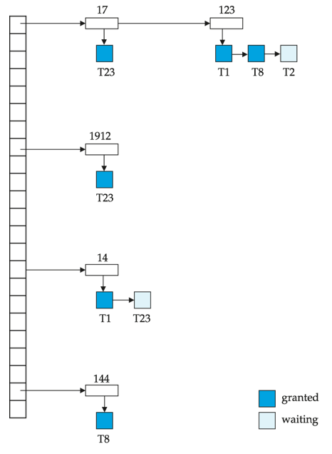
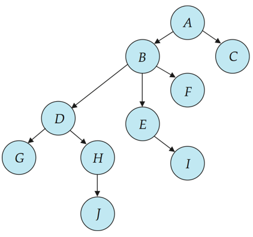
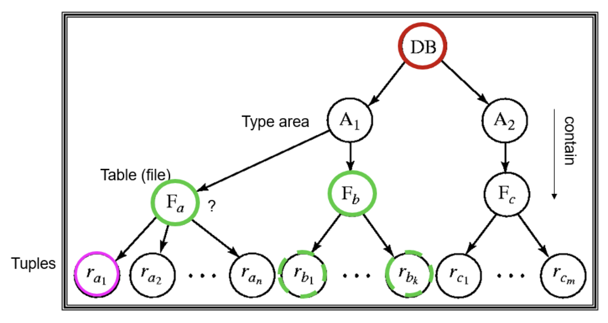

并发控制¶
可串行化调度是并发控制的基础
基于锁的协议¶
- 数据项可以用两种模式加锁：
- 排他锁（Exclusive，X）模式：
- 数据项既可以被读取，也可以被写入
- X 锁通过
lock-X指令申请
- 共享锁（Shared，S）模式：
- 数据项只能被读取
- S 锁通过
lock-S指令申请
- 排他锁（Exclusive，X）模式：
- 锁请求提交给并发控制管理器，只有当锁请求被批准后，事务才能继续执行
-
锁兼容矩阵
已持有锁 请求锁 S（共享锁） X（排他锁） S（共享锁） true（兼容） false（不兼容） X（排他锁） false（不兼容） false（不兼容） - 如果事务请求的锁与其他事务已经持有的锁兼容，则该事务可以获得该数据项上的锁
- 如果锁请求不能被批准，则发出请求的事务必须等待，直到其他事务持有的所有不兼容锁被释放之后，该锁请求才会被批准
WARNING
如果在读取 A 和读取 B 之间，A 和 B 被其他事务更新（因为 S 是可共享锁），则显示出的和将是错误的（A 是旧值，B 是新值）
- 缺点：
- 可能会产生死锁（不可避免）
- 如果并发控制管理器设计不当，也可能发生饥饿
-
两阶段锁 2PL
- Growing Phase：事务可以获得锁，不能释放锁
- Shrinking Phase：事务可以释放锁，不能再获得锁
- 每个事务都有一个锁点（lock point）：事务获取的最后一个锁的时间点
- 优点：该协议保证可串行化，事务能够按照它们的锁点（Lock Point）顺序进行串行化
- 缺点：
- 但是不能保证避免死锁
- 可能发生级联回滚
- strict 2PL：事务必须一直持有其所有排他锁，直到事务提交或中止（也就是拿到所有排他锁之后才可以执行）
- Rigorous 2PL：事务必须保持其所有锁，直到事务提交或中止（事务可以按照它们的提交顺序进行串行化）
TIPs
- 即使采用 2PL，仍然可能存在某些冲突可串行化调度无法被产生
- 然而，在没有额外信息（例如数据访问顺序）的情况下，从以下意义上说，2PL 是实现冲突可串行化所必需的：给定一个不遵循 2PL 的事务 Ti，总可以找到另一个遵循 2PL 的事务 Tj，使得 Ti 和 Tj 的某个调度不是冲突可串行化的
带锁转换的 2PL
- 第一阶段（增长阶段）
- 可以获得数据项上的 lock-S
- 可以获得数据项上的 lock-X
- 可以将共享锁（lock-S）转换为排他锁（lock-X）（upgrade）
- 第二阶段（收缩阶段）
- 可以释放 lock-S（unlock）
- 可以释放 lock-X（unlock）
- 可以将排他锁（lock-X）转换为共享锁（lock-S）（downgrade）
- 该协议保证可串行化，但它仍然依赖程序员在程序中插入各种加锁指令
锁的实现¶
- 锁管理器
- 可以作为独立进程实现，事务向其发送加锁和解锁请求
- 锁管理器对锁请求的回复包括
- 发送锁授予消息
- 或者在发生死锁时，发送要求事务回滚的消息
- 请求锁的事务等待，直到其请求得到回应
-
锁表：用于记录已授予的锁和待处理的请求，还记录已授予或请求的锁类型
- 锁管理器来维护
- 锁表通常实现为内存中的哈希表，以被锁数据项的名称作为索引
锁表结构

其中深蓝色矩形表示已授予的锁，浅蓝色矩形表示正在等待的请求
- 新请求被添加到该数据项请求队列的末尾，如果与之前所有锁兼容，则授予该锁
- 解锁请求会导致相应请求被删除，随后检查后续请求是否可以被授予
- 如果事务 abort，该事务所有等待或已授予的请求都会被删除（锁管理器可维护每个事务持有的锁列表，以实现高效处理）
基于图的 protocol¶
-
基于图的协议（Graph-based Protocols）是两阶段锁协议的另一种替代方案
NOTE
在所有数据项集合 \(D={d_1,d_2,\ldots,d_h}\) 上施加一个偏序关系 \(\rightarrow\)
如果 \(d_i \rightarrow d_j\)，那么任何同时访问 \(d_i\) 和 \(d_j\) 的事务，都必须先访问 \(d_i\)，再访问 \(d_j\)
这意味着数据项集合 \(D\) 可以被看作一个有向无环图，称为数据库图
-
树协议（Tree Protocol）是一种简单的基于图的协议
树协议

图中一共七个数据项
- 只允许使用排他锁（X 锁）
- 事务 Ti 的第一个锁可以加在任何数据项上
- 后续对数据项 Q 加锁的前提是：Ti 当前正持有 Q 的父节点的锁
- 数据项可以在任何时候解锁
- 如果数据项已被 Ti 加锁并解锁，则 Ti 后续不能再重新对其加锁
优点 & 缺点
- 优点：
- 树协议保证了冲突可串行化，并且避免死锁，无需回滚
- 在树锁协议中，解锁可以比两阶段锁协议更早发生：缩短等待时间，提高并发性
- 缺点：
- 协议不保证可恢复性或无级联回滚，需要引入提交依赖以确保可恢复性
- 事务可能必须锁定自己不访问的数据项：增加锁开销，延长等待时间，并且可能降低并发性
- 在树协议下可能实现的调度，在两阶段锁下未必可行，反之亦然。
* 基于时间戳的协议¶
- 每个事务在进入系统时会被分配一个时间戳。若旧事务 Ti 的时间戳为 TS(Ti)，新事务 Tj 会被分配时间戳 TS(Tj)，且 TS(Ti) < TS(Tj)
-
时间戳排序协议保证任何发生冲突的读、写操作都按照时间戳顺序执行
Abstract
为保证此行为，协议为每个数据项 Q 维护两个时间戳值：
- W-timestamp(Q)：成功执行 write(Q) 的事务中最大时间戳
- R-timestamp(Q)：成功执行 read(Q) 的事务中最大时间戳
- 假设事务 Ti 发出 read(Q)：
- 如果 TS(Ti) ≤ W-timestamp(Q)，则 Ti 需要读取的 Q 值已经被覆盖，因此拒绝该读操作，并将 Ti 回滚
- 如果 TS(Ti) ≥ W-timestamp(Q)，则执行该读操作，并将 R-timestamp(Q) 设为 max(R-timestamp(Q), TS(Ti))
- 假设事务 Ti 发出 write(Q)：
- 如果 TS(Ti) < R-timestamp(Q)，则 Ti 要产生的 Q 值之前已经被需要，而系统假定该值永远不会被产生，因此拒绝该写操作，并将 Ti 回滚
- 如果 TS(Ti) < W-timestamp(Q)，则 Ti 试图写入一个过时的 Q 值，因此拒绝该写操作，并将 Ti 回滚
- 否则，执行该写操作，并将 W-timestamp(Q) 设为 TS(Ti)
-
正确性：
- 时间戳排序协议保证可串行化，因为优先图中的所有边都由事务（较小时间戳）指向事务（较大时间戳），因此优先图中不会出现环路
- 时间戳协议保证无死锁，因为事务从不等待
- 问题：产生的调度可能不是无级联回滚的，甚至可能不是可恢复的
- 解决方法：
- 一个事务的所有写操作构成一个原子动作，当某事务正在执行写操作时，不允许其他事务执行
- 中止的事务重新启动时，会被分配一个新的时间戳
* 基于验证的协议¶
-
基于验证的协议：事务 Ti 的执行分为三个阶段：
- 读与执行阶段：事务 Ti 只写入临时局部变量
- 验证阶段：事务 Ti 进行验证测试，判断其局部变量是否可以写入数据库而不违反可串行化性
- 写入阶段：如果 Ti 验证通过，更新写入数据库；否则，事务回滚
TIPs
- 也称为乐观并发控制（OOC）
- 并发执行的事务的三个阶段可以交错进行，但每个事务必须按顺序经历三个阶段
-
每个事务 Ti 有 3 个时间戳：
- Start(Ti)：Ti 开始执行的时间
- Validation(Ti)：Ti 进入验证阶段的时间
- Finish(Ti)：Ti 完成写入阶段的时间
- 为了提高并发性，可串行化顺序由验证时赋予的时间戳决定（因此，TS(Ti) 被赋值为 Validation(Ti)）
- 优点：当冲突发生概率较低时，该协议非常有用，并且能够提供更高程度的并发性
- 因为可串行化顺序不是预先决定的
- 需要回滚的事务相对较少
多粒度¶
- 多粒度（Multiple Granularity）：允许根据需求对不同大小的数据项进行加锁
-
数据结构：
- 定义一个数据粒度的层次结构：数据库 → 表 → 页 → 行/记录
- 其中较小粒度嵌套在较大粒度内部，并可用树形结构表示（不要与树锁协议混淆）
- 当事务显式地锁定树中的某个节点时，它会以相同的锁模式隐式地锁定该节点的所有后代节点

-
锁粒度（即进行加锁的树层级）：
- 细粒度（Fine Granularity，树的较低层）：高并发性，但高加锁开销
- 粗粒度（Coarse Granularity，树的较高层）：低加锁开销，但低并发性
意向锁¶
- Intention Locks：当事务要在某节点加锁时，先在该节点的所有祖先节点加意向锁
-
意向锁类型：
锁类型 含义 IS (Intention Shared) 后代存在 S 锁（共享锁） IX (Intention Exclusive) 后代存在 X 锁（排它锁） SIX (Shared + Intention Exclusive) 当前节点 S 锁 + 后代存在 X 锁 -
兼容矩阵：
IS IX S SIX X IS true true true true false IX true true false false false S true false true false false SIX true false false false false X false false false false false -
作用：
- 当锁高层节点时，无需检查所有子节点是否锁定，只需查祖先节点的意向锁
- 防止与后代锁冲突，提高效率
-
事务 Ti 对节点 Q 加锁规则：
- 必须遵守锁兼容矩阵
- 树根必须先加锁，可使用任意模式
- Q 节点可以加 S 或 IS 锁，仅当 Q 的父节点已由 Ti 加锁为 IX 或 IS
- Q 节点可以加 X、SIX 或 IX 锁，仅当 Q 的父节点已由 Ti 加锁为 IX 或 SIX
- Ti 只能加锁未曾解锁过的节点（符合两阶段锁协议，2PL）
- Ti 只能解锁那些没有子节点被自己锁定的节点
TIPs
- 加锁顺序：自顶向下
- 解锁顺序：自下而上
- 优点：增强并发性，降低加锁开销
* 多版本机制¶
多版本机制（Multiversion Schemes） 通过保留数据项的旧版本来提高并发性
- 每一次成功的 write 操作都会创建该数据项的一个新版本
- 使用时间戳来标识各个版本
- 当执行 read(Q) 操作时，根据事务的时间戳选择 Q 的合适版本，并返回该版本的值
- 读操作永远不需要等待，因为总能立即返回一个合适的版本
多版本时间戳
每个数据项 Q 都维护一个版本序列：
每个版本 Qk 包含三个数据字段：
- Content：版本 Qk 的值
- W-timestamp(Qk)：创建（写入）版本 Qk 的事务的时间戳
- R-timestamp(Qk)：成功读取版本 Qk 的事务中的最大时间戳
当事务 Ti 创建数据项 Q 的新版本 Qk 时，Qk 的 W-timestamp 和 R-timestamp 都初始化为 TS(Ti)
当事务 Tj 读取 Qk 且 TS(Tj) > R-timestamp(Qk) 时，更新 Qk 的 R-timestamp
死锁处理¶
- 如果存在这样一个事务集合，集合中的每个事务都在等待集合中的另一个事务，则系统发生了死锁（Deadlock）
- 处理死锁
- 死锁预防（Deadlock Prevention）
- 死锁检测与死锁恢复（Deadlock Detection and Deadlock Recovery）
死锁预防¶
- 死锁预防协议（Deadlock Prevention Protocols）保证系统永远不会进入死锁状态。
- 保守两阶段锁（Conservative 2PL）：
- 要求每个事务在开始执行之前就锁定其所需的全部数据项
- 缺点：并发性差；很难预先预测事务将访问哪些数据项
-
对所有数据项施加偏序关系
- 要求事务只能按照规定顺序对数据项加锁（基于图的协议）
- 因此不会形成环路，所以不会发生死锁
Example
规定顺序：先锁 A，再锁 B
- T1：先锁 A → 锁 B
- T2：先锁 A → 锁 B
由于所有事务都按顺序加锁，永远不会形成环路，死锁被避免
-
基于时间戳的方案
-
Wait-die 方案（非抢占式）：
- 老事务可以等待年轻事务释放锁；年轻事务不能等待老事务，否则回滚
- 缺点：事务可能多次回滚才能获取锁
Example
时间戳：T1 < T2（T1 比 T2 老）
- T1 锁 A，T2 锁 B
- T2 想锁 A：年轻事务不能等待老事务 → T2 回滚
- T1 可以继续锁 B → 完成操作
- 回滚 T2 后重新执行，保证不会死锁
-
Wound-Wait 方案（抢占式）
- 老事务不会等待年轻事务；老事务“伤害”年轻事务，强制其回滚
- 年轻事务可以等待老事务
- 优点：回滚次数可能比 Wait-Die 少
Example
时间戳：T1 < T2（T1 比 T2 老）
- T1 锁 A，T2 锁 B
- T1 想锁 B：老事务可以“伤害”年轻事务 → T2 被回滚
- T1 获得 B 锁 → 完成操作
- 回滚的 T2 后续再执行，不会死锁
Success
在 wait-die 和 wound-wait 两种方案中，被回滚的事务会使用其原始时间戳重新启动。因此，较老的事务始终优先于较新的事务，从而避免饥饿（Starvation）现象。
-
-
基于超时的方案（Timeout-Based Schemes）：
- 事务对锁的等待时间只允许持续一个指定时长
- 超时则事务被回滚，因此系统不会无限等待，死锁不可能发生
- 优点：实现简单
- 缺点：可能发生饥饿；很难确定一个合适的超时时间
死锁检测与恢复¶
- 死锁可以用等待图来描述，当且仅当等待图中存在环时，系统处于死锁状态
- 必须周期性地调用死锁检测算法来查找环路
- 当检测到死锁时：必须回滚某个事务以打破死锁，应选择代价最小的事务作为牺牲者
- 回滚（Rollback）：需要决定事务回滚到什么程度：
- 完全回滚（Total Rollback）：中止（Abort）该事务，然后重新启动
- 部分回滚（Partial Rollback）：只回滚到足以打破死锁的位置，通常更有效
WARNING
如果总是选择同一个事务作为牺牲者，就会发生饥饿（Starvation）。
为避免饥饿，应将事务已经经历的回滚次数纳入代价因素进行考虑。
插入与删除操作¶
Quote
此处具体内容请查看 PPT 或笔记
* 索引结构中的并发控制¶
Quote
此处具体内容请查看 PPT 或笔记